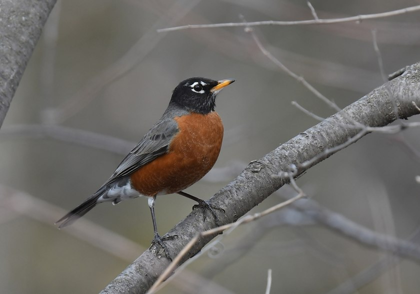

American Robin
What to look for
Rusty orange chest and a dark gray-brown back. Watch for the upright posture and the short runs and pauses as it searches for food.
Where to look
Look on lawns, in parks, and in trees with fruit.

Rusty orange chest and a dark gray-brown back. Watch for the upright posture and the short runs and pauses as it searches for food.
Look on lawns, in parks, and in trees with fruit.